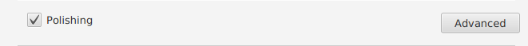
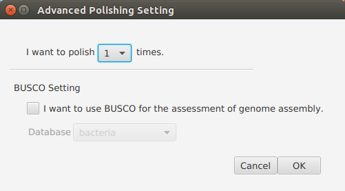

Polishing Settings¶
 BUSCO settings (Optional)¶
Set BUSCO options.
Note
- Select “I want to use BUSCO for the assessement of genome assembly” if you want to use BUSCO. Default: not selected.
- Select a lineage dataset. Default: Bacteria.
Trimmomatic settings [1]¶
Trim Illumina reads when it is necessary.
Note
- Illumina reads will be trimmed in “Polishing” step only when all the following two conditions are satisfied:
- No hybrid assembly or without assembly;
- Illumina reads filename contains no “HQ”.
- Remove Illumina adapters provided in the NexteraPE-PE.fa file (provided). Initially Trimmomatic will look for seed matches (16 bases) allowing maximally 2 mismatches. These seeds will be extended and clipped if in the case of paired end reads a score of 30 is reached (about 50 bases), or in the case of single ended reads a score of 10, (about 17 bases).
- Remove leading low quality or N bases (below quality 3)
- Remove trailing low quality or N bases (below quality 3)
- Scan the read with a 4-base wide sliding window, cutting when the average quality per base drops below 15
- Drop reads which are less than 40 bases long after these steps
| [1] | Trimmomatic http://www.usadellab.org/cms/?page=trimmomatic |